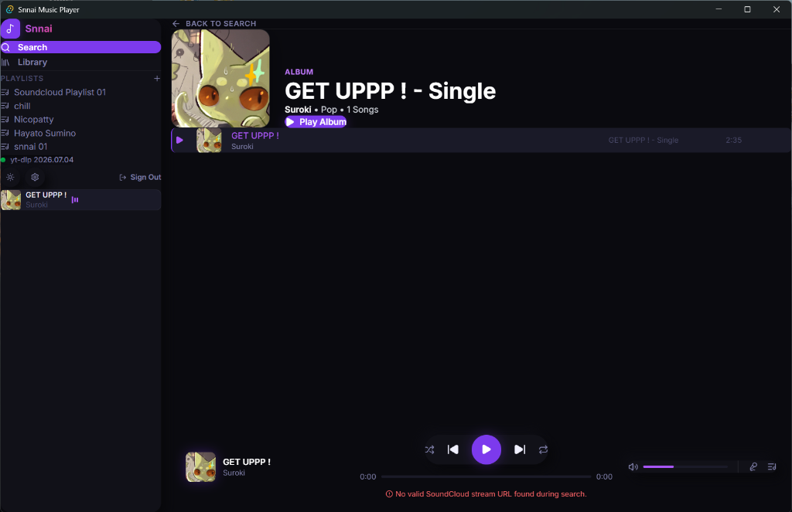

Snnai is a premium, lightning-fast desktop music player that combines official SoundCloud API streaming and iTunes search into a single glassmorphic experience. Powered by Tauri, Rust, and Supabase.

A native desktop experience built with cutting-edge web technologies and a Rust-based core engine.
Never let the silence take over. Snnai automatically fetches related tracks from SoundCloud and iTunes when your queue runs dry.
Search across SoundCloud and iTunes concurrently. Stream the highest quality audio fallback via our integrated Rust engine.
Built-in persistent settings database stores your credentials and audio streams locally for sub-millisecond startup times.
Create playlists, sync your playback history, and share your favorite genres across devices with instant cloud sync.
Explore Snnai's clean interface, beautiful lyrics view, and responsive queues.
Experience zero-latency audio streaming directly on your Windows PC.
*If Windows SmartScreen warns about an unsigned application, click "More Info" and then "Run Anyway". Snnai is 100% open-source and safe.
Download the installer to your PC.
Run the setup.exe and let it install in seconds.
Sign in with Supabase or use your SoundCloud keys to stream!